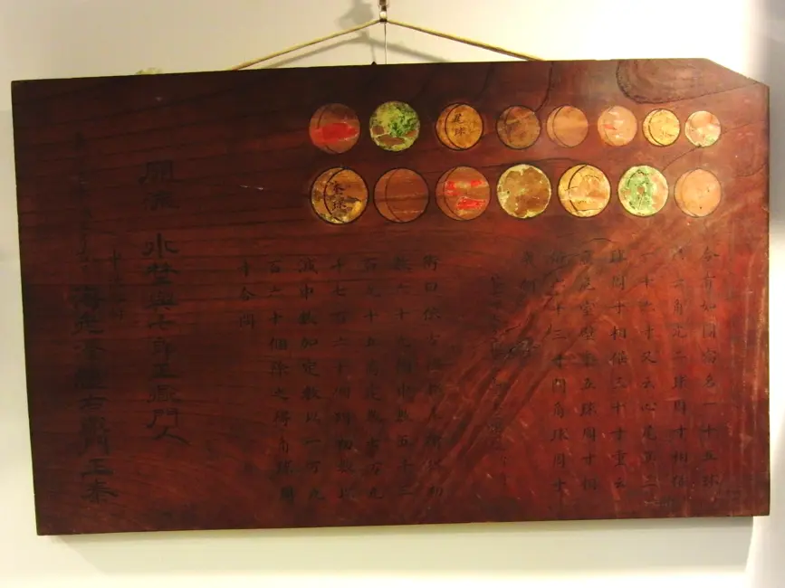
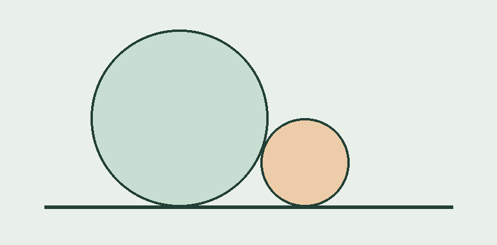

Mathematics · History of Mathematics
The Evolution of East Asian Mathematics
Biggan Jiggasha
Several traditions in one region
Measuring land, accounting for grain or fitting circles inside another circle: East Asian mathematics grew around a variety of questions. This account focuses on China, Korea and Japan. Books and methods moved between them, and local readers and teachers used them to formulate questions of their own. [1,2]
Problem books and counting rods in China
China’s Nine Chapters on the Mathematical Art took shape over time. It sets problems involving land area, grain exchange, proportions and multiple unknowns. Counting rods could represent numbers on a board. For a system of equations, coefficients could be arranged in rows and columns and unknowns eliminated in steps. A modern reader can recognize the resemblance to elimination methods for linear systems. [1,2]
Why does the rule work?
In his commentary of 263 CE, Liu Hui explained why many of the rules worked. One example used polygons with more and more sides inside a circle to improve estimates of its measurement. Several centuries later, Qin Jiushao’s 1247 treatise documented advanced methods, including how to reconcile several remainder conditions. Imagine grain that leaves two units when grouped in threes and three when grouped in fives. Both eight and twenty-three fit those conditions. [1–3]
A new life for the books in Joseon Korea
Chinese mathematical texts circulated in Korea. In the early eighteenth century, during the Joseon dynasty, Cho Tae-gu and Hong Jeong-ha left important examples of Korean mathematical writing. Hong’s Gu Il Jip collects a wide range of computational problems and methods. Such books let us see both the movement of techniques across the region and the work of Korean authors. [1,4]
Wasan and sangaku in Japan
In Edo-period Japan, local mathematics came to be known as wasan. Seki Takakazu worked on advanced methods of eliminating unknowns from equations. In another practice, enthusiasts dedicated wooden tablets called sangaku at temples and shrines. A single design could combine tangent circles, triangles and questions about their dimensions. In the nineteenth-century Meiji era, institutional instruction changed as state education adopted Western mathematics. Surviving tablets preserve evidence of a different public setting for learning and displaying mathematics. [5,6]


